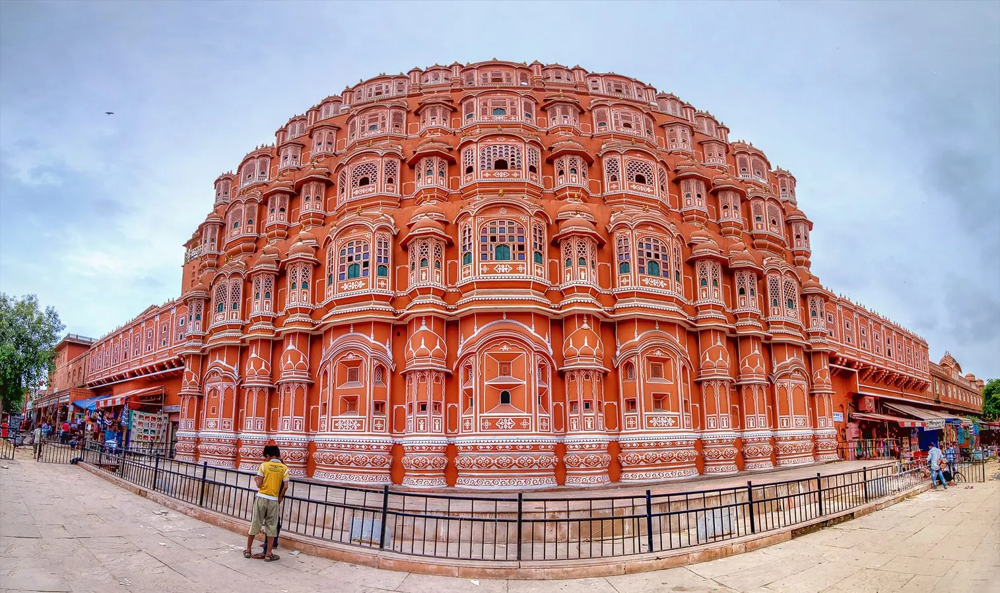
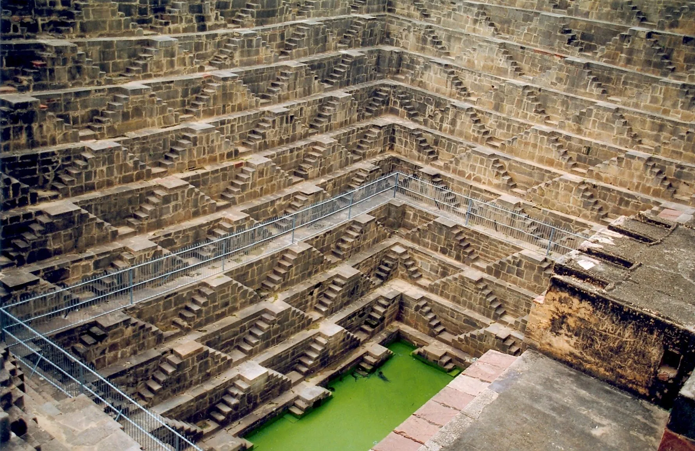
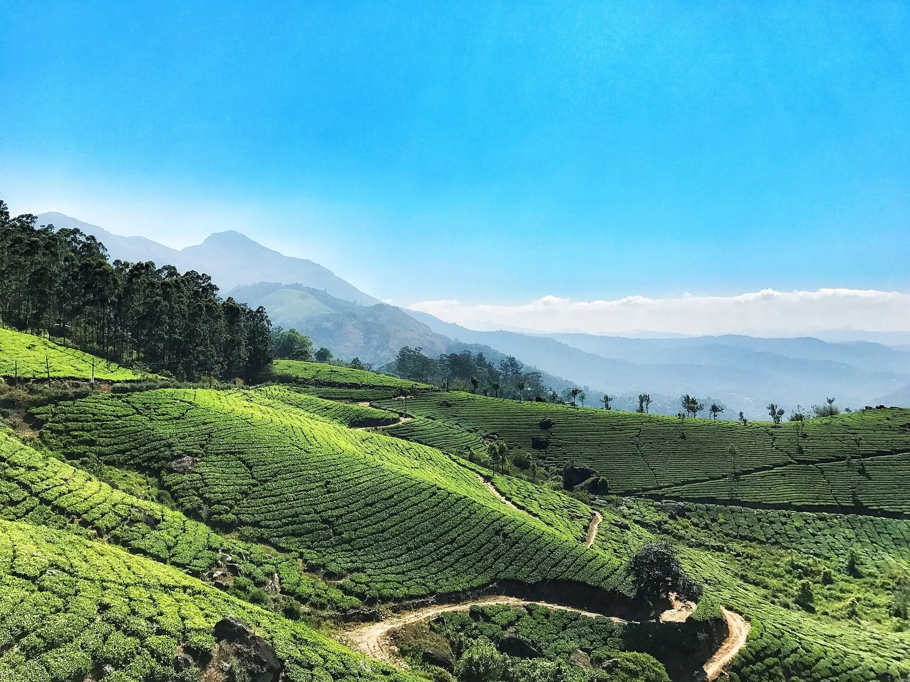

Jaipur · Rajasthan · culture
Jaipur, before the city hurries
A short old-city walk, one beautiful facade, and enough time to stop for chai.
Ten concise fieldnotes. Start with a mood, choose one place, and leave some space in the day.

10 places to explore

A short old-city walk, one beautiful facade, and enough time to stop for chai.

Chand Baori rewards a slower look: repeating steps, shifting shadow, and the beauty of useful design.

A gentle way to meet the ghats: arrive quietly, observe respectfully, and leave the camera down sometimes.

Palm-lined banks, small boats, and everyday life at water level. Keep your backwater day beautifully simple.

Tea country is best enjoyed from a permitted path, with a light jacket and no hurry to reach the next viewpoint.

A small train can change how you see a place. Let the journey be the outing, not just a way to get there.

Park Street is a starting point, not a to-do list. Follow the shopfronts, stop for a bite, and notice the details above eye level.

At Kala Pathar, let a beach walk be enough. Sand, shade and the changing colour of the water need little embellishment.

A landscape of carved stone and boulders calls for a modest plan: one area, plenty of water, and time in the shade.

A coastal afternoon made from simple things: a walk, a view, and somewhere comfortable to sit.